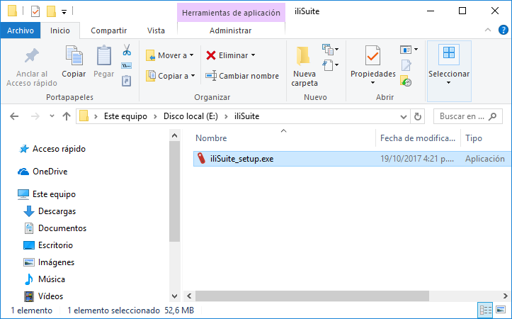
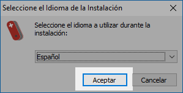
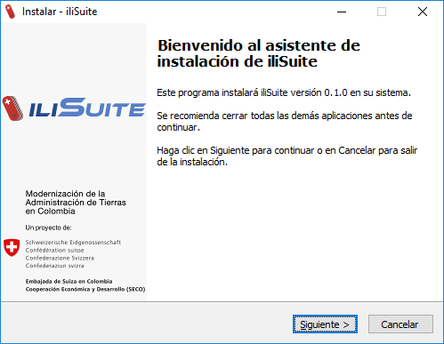
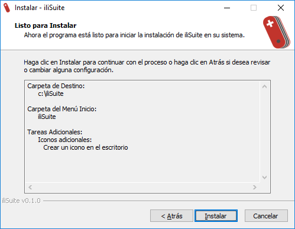
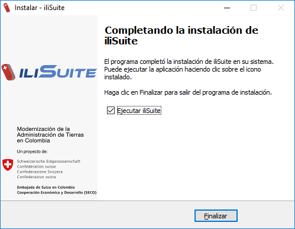

2. Instalación
2.1. Windows
- Ingrese a la carpeta donde tiene el archivo de instalación iliSuite_setup.exe y haga doble clic sobre éste.

- El instalador inicia desplegando el diálogo de selección de idioma que se utiliza en el resto de la instalación. Seleccione una opción y haga clic en Aceptar.


- El instalador muestra la pantalla de bienvenida indicándole la versión de ilisuite que se instalará y algunas recomendaciones adicionales. Haga clic en Siguiente.

- Este paso se omite si el instalador detecta solo una instalación de Java Runtime Enviroment (JRE). Si hay más de una instalación del JRE el instalador le mostrará una lista de versiones del JRE instalados para que seleccione con cuál se ejecutará iliSuite. Seleccione una opción y haga clic en Siguiente.

- Para seleccionar la carpeta de instalación de iliSuite digite la ubicación en el cuadro de texto o selecciónela haciendo clic en el botón Examinar y haga clic en siguiente. La carpeta predeterminada es c:iliSuite.

- Digite la carpeta del menú inicio en la que se pondrá el acceso directo de iliSuite. Si desea colocarlo en una carpeta existente, haga clic en examinar.

- El instalador le permite elegir si desea crear un acceso directo a iliSuite en su escritorio. Si desea hacerlo, marque la opción “Crear un icono en el escritorio” y haga clic en siguiente.

- Antes de comenzar el proceso de instalación aparece el resumen de las opciones elegidas en el proceso. Si la información es correcta, haga clic en el botón Instalar. En caso contrario, haga clic en el botón Atrás para cambiar las opciones deseadas.

- Espere a que se instalen los archivos de iliSuite en su sistema

- El instalador le indicará que el proceso finalizó correctamente. Si desea que la aplicación se ejecute justo después de finalizar el instalador, seleccione la opción Ejecutar iliSuite. Por último, haga clic en el botón Finalizar.
